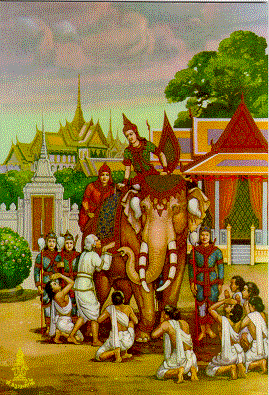

BuddhaSasana Home Page
This document is written in Vietnamese, with Unicode Times
font
Perfection of Generosity - Dana Parami
Bố Thí Balamật
When the Buddha was born as Vessantara, he had fulfilled his Supreme Perfection of Generosity. He gave away his possession, including white elephant, children, and wife. Failing to reconcile disputes and conflicts, he volunteered to leave his kingdom in exile. He stayed in Vanktagiri for nine and a half months. Thereafter he was invited to return home and became king. Trong một tiền kiếp khi Ðức Phật là Ngài Vessantara, Ngài thực hành hạnh Bố Thí Balamật. Ngài để lại gia tài mọi sở hữu, kể cả voi trắng, gia đình. Không thể hòa giải các xung đột, Ngài tình nguyện rời bỏ xứ sở để sống lưu vong. Ngài sống tại núi Vanktagiri chín tháng rưỡi. Sau đó, Ngài được mời về để tiếp tục làm vua.
Kệ ngôn: Ðường tu bố thí đứng đầu
Vị tha là tánh vô cầu là tâm
Không vì thương ghét sơ thân
Bàn tay ban bố nào phân biệt gì
Hy sinh ngoại vật tứ chi
Hoặc luôn mạng sống sá gì huyển thân
Phật xưa pháp độ vẹn toàn
Chúng con nguyện bước theo chân Ðại Từ( www.phapluan.com )
[Xuất Gia][Tinh Tấn][Từ Tâm][Chí Nguyện][Trí Tuệ]
[Trì Giới][Kiên Nhẫn][Xả Tâm][Chân Thật][Bố Thí]
Source: Post Card by S. Dhumphakdi & Sons Publisher, Bangkok, Thailand
last revised: 02-Sept-2004